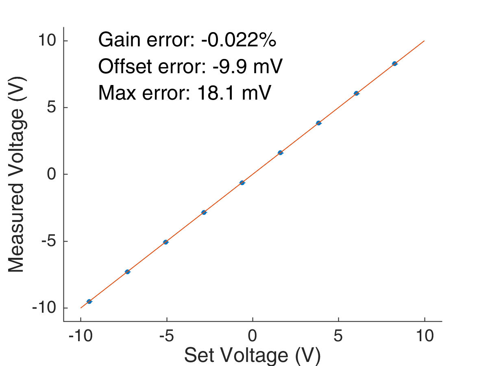
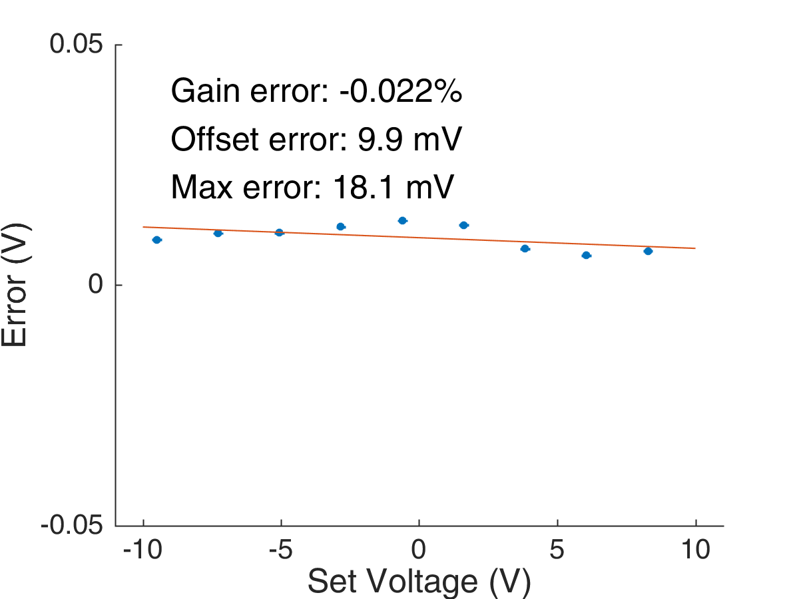
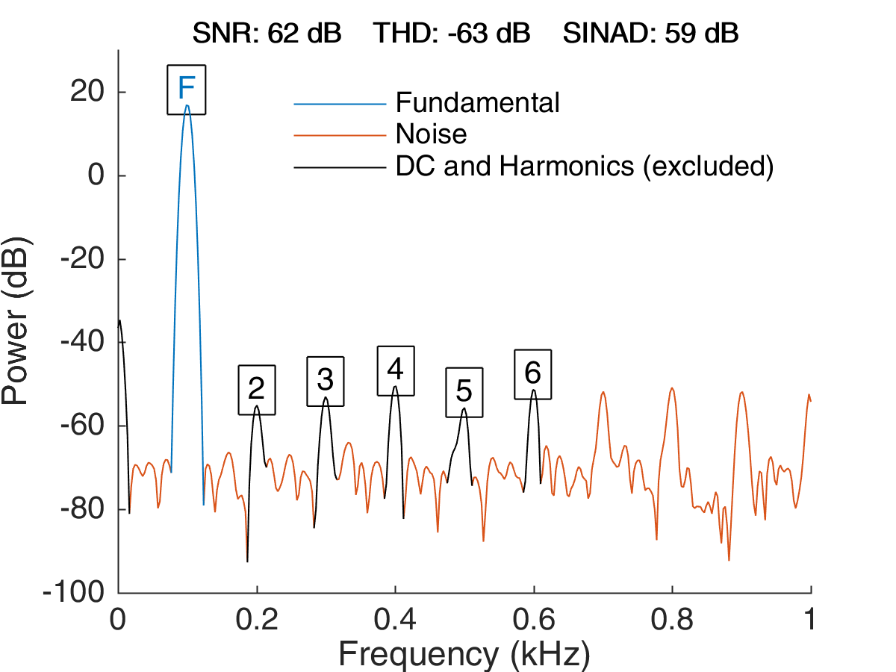
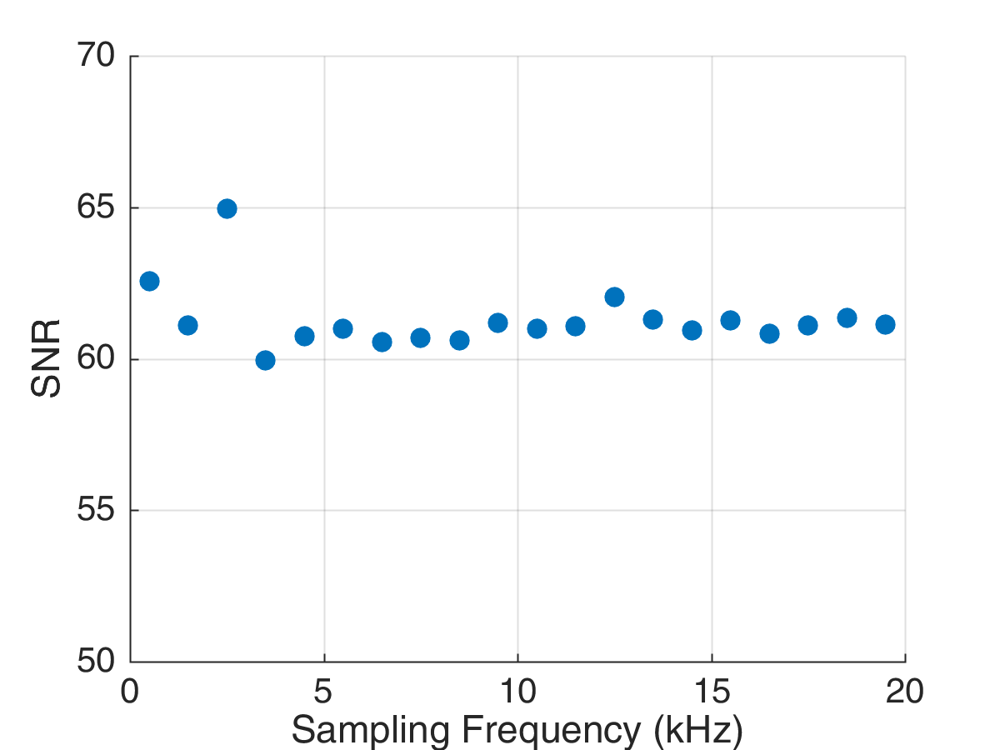

The AnalogIn Module adds analog acquisition capabilities to the Bpod ecosystem.
User Functions
Examples
The static performance of the board is characterized by the gain error, offset error and maximum absolute error. Below is the result of acquiring a set of static signals across the voltage range of the board.
 Signal-to-noise ratio (SNR), total harminic distortion (THD) and signal-to-noise-and-distortion were calculated using a 100Hz signal and sampling at 2kHz.
The SNR does not depend on the sampling frequency up to 20kHz.
License